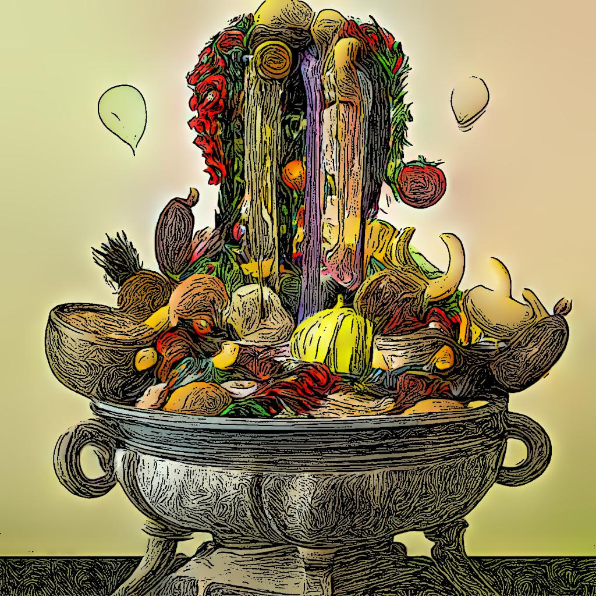
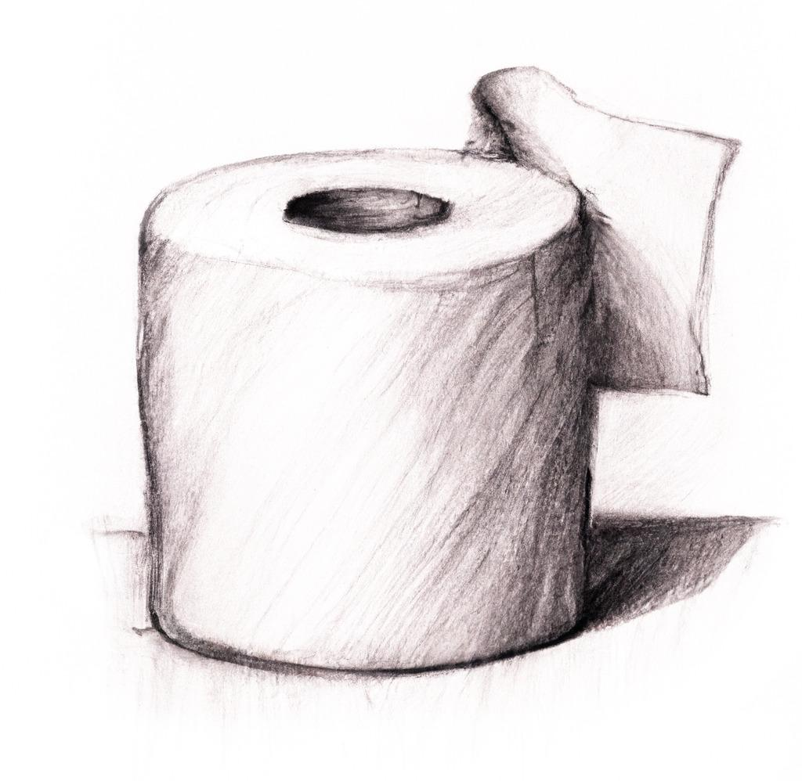

Mission
I live on the Canadian prairies, one of the breadbaskets to the world, but food isn't any cheaper or more plentiful here than it is in other places, because that's how modern society works. We live in a truly globe-spanning market, and regardless of where things might actually be produced, they're quickly packed up and shipped off to everywhere else. Everything from smartphones to underwear, from car parts to chicken fingers. The fruits of the world are literally at our fingertips.
Usually.
Unfortunately the pandemic showed us just how fragile that supply network can be. And if we went into a collective tailspin over a toilet paper shortage, what the hell is going to happen when the hamburger shelves run dry? Or the potato aisle? What if your city runs out of bread and milk?
I think we got lucky with that whole toilet paper thing. Nobody is so desperate that they'll abandon their job to secure their Charmin supply, but if you're suddenly facing a lack of food because the system hiccups? Well, you would probably skip work for a day or two to get that sorted out. And people skipping work is what could cascade that little hiccup into a much bigger deal.
I'm not predicting that society will be reduced to Australian gasoline hooliganism, but it doesn't have to get that bad to create chaos. All we have to do is stumble for a few days in an area as critical as the food supply, and the fireworks will commence. The average North American city has less than 10 days worth of food on hand, (in grocery stores and warehouses) but a minor disruption in the Suez canal threw the entire global supply chain into chaos for an entire year. And that discrepancy worries me. A few days without food deliveries could cause mass panic, which would lead to hoarding, which would then trigger violence, riots...
So the question I keep asking myself, is the one up there in the banner of this site: If society stumbles and the grocery trucks stop rolling, how long will I be able to feed my family? Will I be able to keep it up for as long as a year, while we wait for things to get sorted out? And what if that single year turns into five?
I'm not about to lay in a 12 year supply of canned asparagus. During a food crisis, that stack of cans would make me indistinguishable from a hoarder, so I'd wind up with a target on my back from every asparigatarian warlord of the apocalypse.
Instead of creating a stockpile of food, then, which would only last a few weeks, my goal is to devise a generator of food. A calorie fountain. Something that can be replicated anywhere, feed a family, and do so indefinitely.
So I am saying no to our asparigatarian overlords. And if you want to say no too, I'll be giving the plans away for free.
{kind=link}
Comments
Comments powered by Disqus